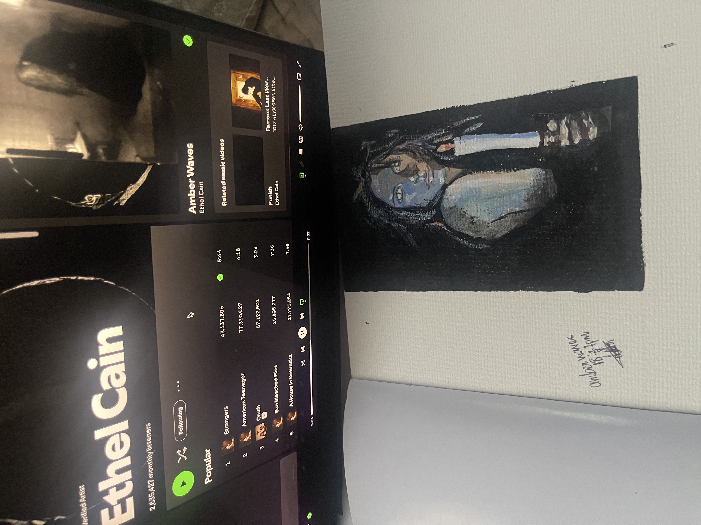
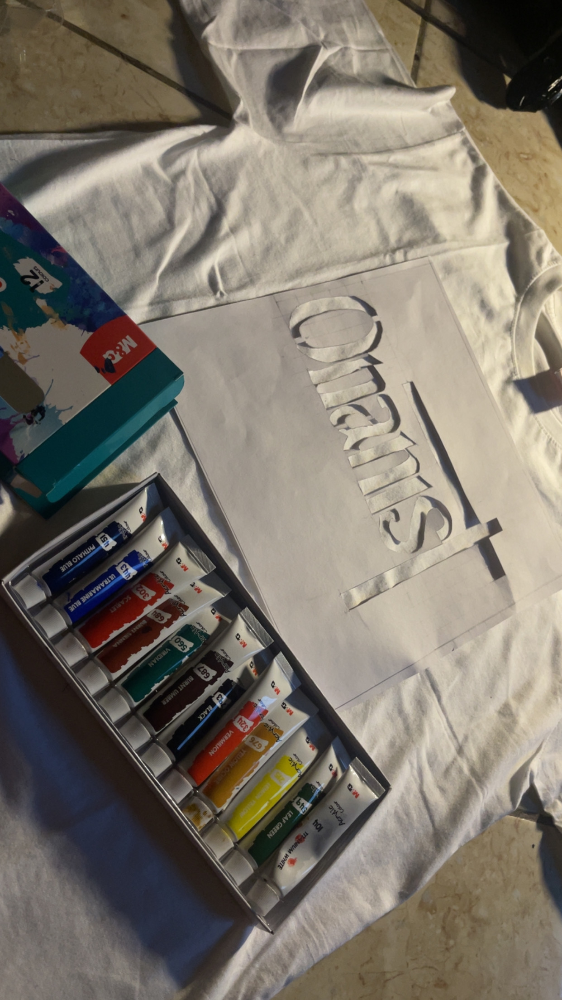

My Projects

"Amber Waves '25"
This project was created to depict the idea of personalisation of love cast aside to get elevated.

"Fifth Track"
This is a personal project involving the use of plain fabric as a medium, a canvas for a concept birthed by 05 of a recent album.